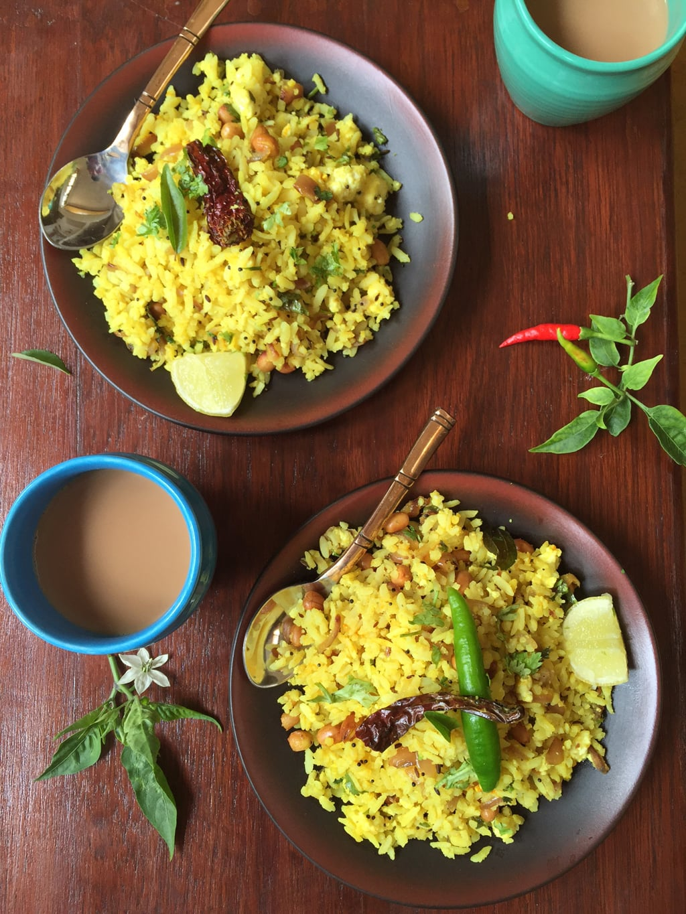

Poha
Poha is a humble dish with few ingredients, but it takes a few rounds of preparing it to get the texture and balance spot on.
So why wait, try this right away!
I have an unshakable fondness for Poha, which falls under the category of 'you can take a girl out of Mumbai,
but you can't take Mumbai out of the girl'. This dish has a special place in my heart and is my all-time favorite.
Even if I'm sound asleep in the middle of the night, the aroma of hot Poha can awaken my taste buds,
and I would happily devour a plate of it with a smile on my face.
That's how much I love this dish, and I'm someone who values their sleep immensely.
Ingredients
- 1.5 cups poha (medium thick)
- 1 pinch asafoetida
- 1/2 tsp mustard seeds
- 1/2 tsp cumin seeds
- 5 - 6 curry leaves
- 2 green chillies , finely chopped
- 2 onions medium , finely chopped
- 1/2 tsp turmeric powder
- 3/4 tsp salt
- 1 lemon (juice of)
- 1/2 tsp sugar
- 2 tbsps coconut fresh
- 2 tbsps coriander finely chopped fresh
Steps
- Take the poha in a bowl. Wash a couple of times with water. Drain all the water, cover and keep aside for 10 minutes.
- Heat the oil in a heavy bottomed pan.
- Add asafoetida and then the mustard and cumin seeds. Once the seeds splutter, add green chillies and finely diced onions.
- Sprinkle a pinch of salt over this and let it cook on medium flame until onions are soft.
- Add turmeric powder and give it a stir to mix together.
- Gently loosen up the poha and add to this mix in the pan. Season with salt and sugar and toss gently to combine all ingredients.
- Cover the pan and steam cook this for 2 minutes so the flavours combine well.
- Switch off the flame. Add the lemon juice and mix well.
- Serve onto plates and garnish with fresh coconut and chopped coriander.
- Serve with wedges of lime and some sev to sprinkle over the top. (optional)
Notes
- For best results, serve poha hot with a cup of Adrak Chai
